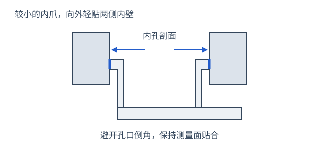
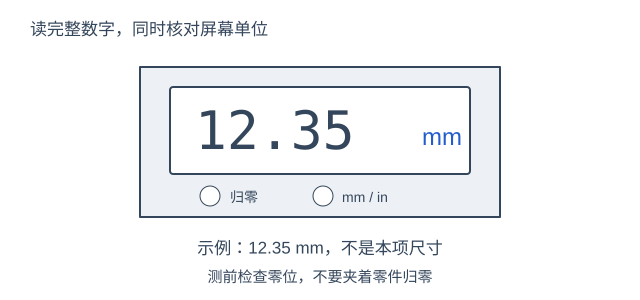
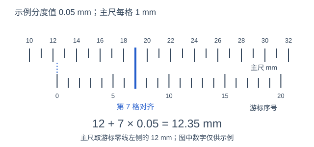

先擦净测量面，轻合外测量爪检查零位。零位异常或工具不适用时，请说明情况并上传照片。
内测量爪：轻贴孔内两侧

- 使用较小的内测量爪，伸入工程师指定的孔或槽，避开孔口倒角。
- 轻轻向外展开，让两个测量面贴住内壁，不要斜着撑紧。
- 测圆孔直径时，在同一深度对正孔中心，轻移寻找最大稳定读数；测槽宽时对正两壁，取最小稳定读数。
斜拍照片上的椭圆不代表要量两个轴；若本项要求孔径，按工程师指定位置测实际孔径。小爪放不进去时可说明无法测量。
数显卡尺怎么读
数显卡尺怎么读

- 测量前闭合外爪核对零位，不要夹着零件按归零。
- 贴合零件后，直接读屏幕上的完整数字，同时看清 mm 或 in；填写区选择相同单位。
- 拍照时让完整显示屏和接触位置清楚可见；一张拍不清可分别补两张。
图中 12.35 mm 只是读数示例，不是本项尺寸；显示位数不等于测量准确度。不要把屏幕英寸数当作毫米填写。
游标卡尺怎么读
游标卡尺怎么读

- 先看卡尺标出的分度值，例如 0.02 mm 或 0.05 mm；不要把不同卡尺的分度值混用。
- 正对刻线，读游标零线左侧最近的主尺毫米数；示例是 12 mm。
- 从游标零线起，找与主尺最重合的刻线，数第几格；用主尺读数＋格数×分度值。示例：12＋7×0.05＝12.35 mm。
图中为 0.05 mm 分度值、每格 1 mm 的主尺示例。游标上的印字不一定就是格数；看不准或零线不对齐时，上传清晰的主尺／游标照片，不要猜数。
看不清读数可直接上传测量照片；没有合适工具时可选择“无法测量”。